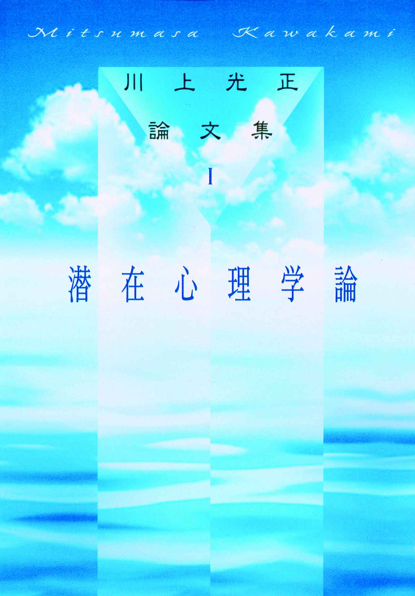
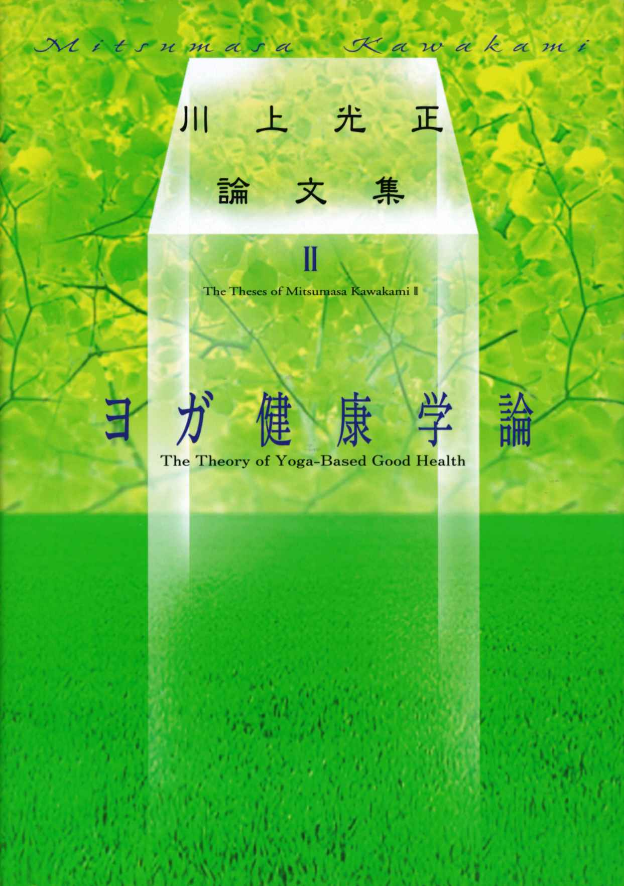
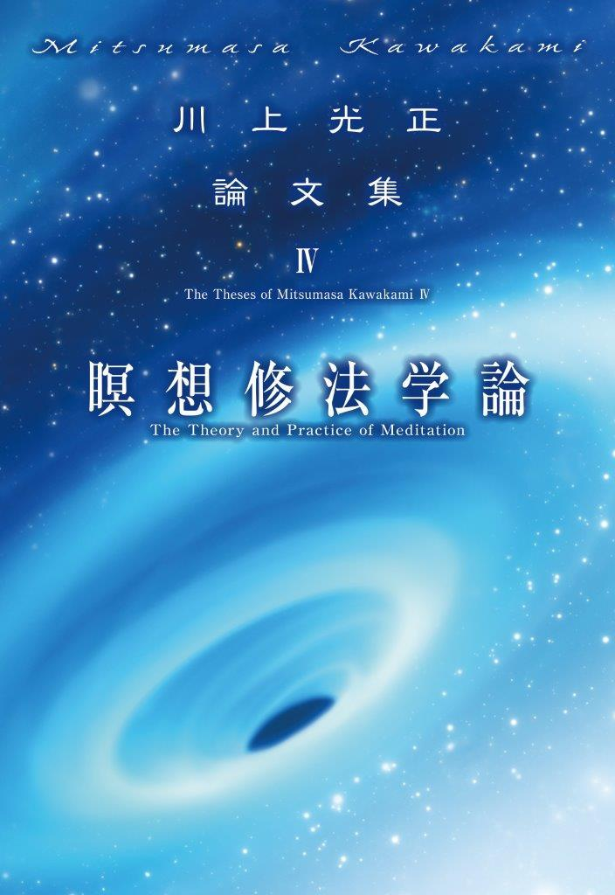

| 「哲」のリーダー学 【４シリーズ】リーダーの精神哲学 | |
| 川上光正 | |
| (2017) | |
■目次■
「哲」のリーダー学
確固とした信念を持つ
「タイム・イズ・ライフ」と銘記する
西洋的合理主義と東洋的自然観を融合
地域と「共生」する企業に
地球を傷つけると魂も傷つく
ヨガの生命重視の思想に学ぶ
〝カルマの法則〟を知り、精神哲学を深化させる
因果律で人材登用、組織運営を考える
川上流ヨガ瞑想の真髄は
真のリーダーは瞑想の習慣が必要
潜在意識を知ると自己変革が容易になる
潜在意識の活用で実在人生が変わる
内なる心と魂の開発を
超潜在意識が教える「共生」の理念
明知な企業は不死である
※本電子書籍は、一九九七年に出版された『リーダーの精神哲学（第一刷）』に基づき、四シリーズの電子書籍版として制作されました。
『じつに時間には二つのかたち（rúpa）がある。
時間と非時間である。
すなわち、太陽よりも以前から存在していたものは非時間である。
それは部分をもっていない。
しかし太陽とともにはじまるものは時間である。
それは部分をもっている（＝分割され得る）ものである。』
（『マイトリ・ウパニシャッド』Maitri-Up.VI,15 ）

確固とした信念を持つ
イギリス人は実に頑固なまでに原理原則にこだわると言われる。
たとえば、イギリス人はお茶を飲むときに、出席者に「ミルク、ファースト」か「ティー、ファースト」かを聞いて回るという。カップにミルクを先に入れるか、紅茶を先に入れるかを聞くのである。
一つのカップの中にミルクを先に入れても、ティーを先に入れても結果は同じである。が、しかし、イギリス人はそこに原理を感じて、尊重するのである。それは彼らの生活の理念であり、大げさにいえば「哲学」にまでなっているのだ。
また、大作家ヘミングウェイは、「書ける、書けないは別にして、毎朝、決まった時間に机の前にすわるようにしている」と著述の秘訣を述べている。彼の仕事のスタイル、フォームである。
こうした、他人から見たら、どうでもいいような「こだわり」、原理原則、スタイルを持つことはリーダーにとって重要なことである。原理を持ち、それを守ることは、リーダーの見識や信念を形づくるからである。
人間とは弱い生き物で、利に動かされ、時の勢いに流されがちである。物事を有利不利、損得、大小、強弱などで判断してしまいがちだ。バブル時代に、本業より財テクをしたほうが儲かると聞き、実際に他の会社がそれで儲けているのを見れば、自分もそうしたくなる。つまり、周囲に影響されて、あっちをかじってみたり、こっちをつついてみたりの無定見になってしまいがちなのだ。
こうした無定見の〝愚〟からまぬがれるのは、リーダーの「何がどうなっても、これだけはしない」という見識、原理、信念である。
こうあるべきだ、こうすべきではないという原理、信念は人間の背骨のようなもので、一つの確固とした信念を持っている人の生活や生き方は、その背骨を支柱としてまっすぐに立ち、揺るがない。風雨にさらされようと不動である。
一方、信念を持たない人のそれは、風向きによって左を向いたり右を向いたり、定型のない風見鶏的なものになってしまう。戦中は戦争を賛美しておきながら、平和が訪れるや昔のことを忘れてしまう、そんなふうな無定見なものになってしまう。
どちらが、リーダーとして適性か。どちらが部下の信頼と尊敬を集めるか。いうまでもないだろう。
信念とは、「～すべきだ」という良心の命令に基づいた義務といえる。そこが、「～したい」という欲望と異なるところである。また、「～でありたい」とする希望とも違っている。義務とは、やってもやらなくてもいいというあいまいな理想や目的ではなく、しなくてはならないという自主的な命令であり、実践である。そこから信念と責任が生まれてくるのである。
価値観が多様化し、相対化していく時代だからこそ、私はこうするのだ、これだけはしないのだという「不動の信念」「不動の精神力」が必要になってくる。とくに、リーダーは組織を正しい方向へ導き、人心を一つにまとめる義務と責任を負っている。
「匹夫の志も奪うべからず」
と孔子もいっている。どんなに低い身分の者でも、その人が確固とした信念を持っていれば、いかなる財力、いかなる権威もこれを曲げることはできないのである。
まして、人の上に立つリーダーは不動の信念、見識、原理原則、哲学、スタイルをもって事に当たり、人を動かさなくてはならない。それがリーダーの責務である。
「タイム・イズ・ライフ」と銘記する
「なんじの生涯を愛するか。しからば時間を愛せよ。なんじの生涯は時間から成る。時間の空費はぜいたくの絶頂である」
印刷工から身を起こし、初代のアメリカ駐仏大使となったベンジャミン・フランクリンの言葉である。
いわゆる「タイム・イズ・マネー」、時は金なりの考え方である。その彼が書籍業にたずさわっていたとき、ある人が本を買いにきた。
「この本はいくらかね」
「一ドルです」
「いくらか安くならないかね」
「・・・・では、一ドルニ十五セントではどうでしょう」
「冗談はよしたまえ」
「それでは、一ドル五十セントでは」
「人をからかうつもりか。時間がたつにつれて値段が高くなるとは何ごとだ」
そう客が怒ると、フランクリンは「タイム・イズ・マネー」と答えて客を納得させたというエピソードが残っている。
私たちは時間というものを、ゼロから積み重ねていくような概念でとらえがちだ。誕生から死へ向かって流れていく。したがって、過去の時間はとり戻せないが、まだ来ぬ未来の時間は無限のように思っている。そこから、時間の空費や浪費が生まれてくる。
時間というものを、誕生のときに寿命という形でドカンとまとめて与えられ、あとはそれを一日一日、一年一年、「消費していくだけ」と引き算的思考でとらえたらどうなるか。時間の貴重さがおのずとわかってくるはずである。
時間のムダ使いがいかに無益なものか。また、時間をうまく活用することがどれほど物事の能率や達成にとって重要なことか、ここで改めていうまでもないだろう。一時も流れて止まぬ、有限の時間をうまく活用することは私たちの生活を向上させ、人生を充実させるのである。
時間をせわしく過ごすことを時間を大切に使うことだとカン違いしている人が少なくない。仕事をやみくもにこなしたり、趣味に熱中したり、睡眠時間をかなり削って勉学にいそしむ。そういうことだけが時間をムダに過ごさない方法だと思っている人は多い。とくに日本人、それも現在、社会のリーダー格になっている年配の日本人にこのタイプが多い。
しかし、時間を全速力で過ごすことだけが時間を有効に使うことではない。ゆったり、ゆっくり、じっくりと過ごす、ゆとりの時間も人間には必要である。
立ち止まる。深呼吸する。休息する。何もかも忘れてボンヤリする。読書や瞑想のうちに時を送る。そういう、一見、時間をムダ使いしているような緩慢とした時間もまた、時の貴重な活用法である。
ことに人の上に立つリーダーは、忙しい日常の中で、「私」に戻る、自分一人になる孤独の時間を持つことが大切だ。己を省み、内面を見つめる貴重な時が明日への活力と叡智につながるからだ。
「時は不動、時間は変動。時は悠々であり、時間は刻々である」――時間には、瞬間と同時に永遠であるような二面性がある。
ヨガの教義には「生命とはプラーナ」とある。プラーナとは息を吸って吐くまでの時間であり、心臓の拡張と収縮であり、さらに考えれば細胞の分裂と増殖、消滅でもあろう。
つまり、プラーナは時であり、生命の発動である。生命が活動してこそ、時間が生まれ、動き出す。生命の営みのないところには、時間も存在しないのである。
時は生命、「タイム・イズ・ライフ」である。その事実を世のリーダーや経営者は銘記したい。
西洋的合理主義と
東洋的自然観を融合
私たちは近代科学の限界を知るべきだ。科学は自然の摂理を「物理的」に説明したが、ついに人間の心の問題、魂の存在を解明し証明してくれることはなかったからである。
一日が二十四時間であり、二十四時間は千四百四十分であり、千四百四十分は八万六千四百秒であることを科学は説明してくれた。私たちは心のあり方で、一日二十四時間が一ヶ月のように長く感じられたり、一時間のように短く感じられたりもする。そういう心の働きを科学は解明してくれなかった。
といって私は、科学を否定しているわけでは毛頭ない。科学が人間にもたらした益は測り知れないものがあるからだ。しかし同時に、科学が自然や人間に与えた害も同じくらい大きい。それを肝に銘じるべきではないか。
科学の限界を知ることは科学を否定することではない。むしろ、限界を知ることはそのものの可能性を信じることであり、また、盲信を戒めることにもなる。
戦後の日本は、あるいは明治維新後の日本は、科学を、いいかえれば西洋合理主義をほとんど盲信に近い形で無条件に導入してきたのである。その弊害が今、さまざまな分野にひずみとなって現われている。
食生活ひとつをとってみてもそうである。東洋にはもともと「全体食」の思想がある。自然界にあるものをできるだけ「まるごと」食べることである。魚でいえば、切り身でなく頭からシッポまで全体をすべて食べる。ししゃもやメザシを重宝がって食べたのは、その典型例である。
穀物、豆、ゴマなどもいずれも種子で、全体食である。しかし実際には、米は胚牙の部分をとりのぞいて食べている。本来なら、玄米のまま食べるのが全体食のはずなのに・・・。大根などでも、葉っぱの部分は多くの人は捨てている。
魚でも、今ではみんなスーパーで切り身のものを買ってきて料理する。いや、調理ずみのものを買ってきて電子レンジで加熱するだけだ。そのせいか、魚は切り身で泳いでいると思い込んでいる子どもや、イワシとサンマの区別のつかない若い女性が増えているそうだ。
西洋的な「部分食」スタイルの弊害といえよう。
肉食も当たり前になっている。元来、日本人は菜食が中心で動物性タンパクは魚肉で補充していた。獣肉は動物の霊肉を食することとして忌み嫌っていた。現在では、肉なしでは日本人の食生活は成り立たなくなっている。
私は四つ足の肉は口にしない主義である。主食は麦飯で根菜を中心にしたヨガ実葉根菜食を食している。蛋白質は湯葉や豆腐、それにチーズである。外食では完全菜食は無理なので、やむなく養殖以外の魚を口にすることはある。それで不自由、不足はないし、健康にも人一倍自信がある。特別な場合をのぞいて、人間は肉なしでも生きていけるのである。
東洋の全体食、菜食の習慣には食も含めた自然をまるごとでとらえる包括的自然観がその根底にある。自然と仲よくし、自然と調和しつつ生きていくという思想である。
一方、部分食、肉食の西洋的スタイルは、自然を切り取り、自然と対立し、自然を支配する分析的自然観が背景にある。
今、どちらの自然観、ライフスタイルが必要とされているかは改めていうまでもないだろう。求められているのは、自然との対立ではなく、調和である。
先ほども述べたように、科学は自然を分析、管理することで発達してきた。その功績は大きい。しかし、それはまた、自然は人間の都合のために支配するものだ、人間に従属すべきものだという行き過ぎた考えも生んだ。今、必要なのは、東洋的ライフスタイルを取り戻して、西洋的合理主義の行き過ぎの〝毒〟を中和させることなのである。
地域と「共生」する企業に
私が主宰する経営心理・瞑想塾、及び潜在心理開発センター、その他多くのネットワークは、東京をはじめ、九州・福岡にもある。門弟やスタッフたちに、「近隣の道をきれいにしよう」と呼びかけ、朝の地域清掃をしてもらっている。
大仰なことをしているわけではない。学校の前の道路や周囲に落ちているゴミを拾い、ホウキでざっと掃き清める、その程度の行為である。また、門弟やスタッフにその行為を強制しているわけでも、命令しているわけでもない。有志の人の自発的行為である。
むろん、まったくの無償奉仕である。「どうです。私たちのしていることは立派でしょう」などと賞賛を期待しているわけでもないし、「地域のためにキレイにしてやろう」といった恩着せがましい行為でもない。ただ、周囲をきれいに清掃すれば、私たちも近隣の住人の方も、気持ちよく、すがすがしく一日を始められるだろう――そう考えているだけで、それ以上のことは何も望んでいない。
しかし、というか、だからというか、門弟やスタッフはみんな労をいとわず清掃に励んでいる。
「先生、掃除を始めて発見したことがあります。店の前にタバコの吸い殼がたくさん落ちている店というのは、例外なく流行っている店ですね」
などと、屈託ない明るい声で状況を報告してくれる。近隣の方からも「いつも、ご苦労さまです。おかげさまで――」と感謝の言葉が返ってくる。
小さな行為だが、私はこれも立派な奉仕活動であり、バクティ・ヨガだと思っている。バクティ・ヨガとは、神に捧げる感謝の気持ちのことであり、報酬も賞賛も求めない、無私の、純粋に利他的な行為のことである。
私たちのネットワークは宗教でも、その団体でもない。本質的にそれとは違う組織だが、それでも、精神哲学に対して無知な人たちに、宗教ではないのかと多少の誤解を受けやすい立場にあることは確かだ。そうした不要な誤解を避けることにも、早朝清掃は結果として大いに役立っている。つまり、私たちは地域住民との「摩擦」「対立」でなく、「共生」「共感」「友好」を望んでいる。
私が主宰し、最高顧問をしているネットワークに「ふれあい・健康ウォーキングクラブ」「豊潤の会」などがある。それらのリーダーは東京地区・九州地区の会員と共に地域の人たちと一緒に健康ウォーキングを楽しんだり、健康セミナーなども開催している。一方、地元の講師を招いて異業種交流会も企画している。ワインや料理に舌鼓を打ちながら、健康や文化、経済などの情報交流の場として、それぞれの会員や地域の人々と親睦を深めている。
これらのネットワークでは、企業の協賛、協力によって、商品を提供していただき、参加賞として会員や地域の人々に差し上げている。
これらの会を自主的に運営しているリーダーたちは、各自、手弁当で協力し慈善と博愛の精神で会員をサポートしている。
これからの企業や企業のリーダーはこうした「共生、共感、友好」を基本姿勢として、地域住民や一般消費者と理解し合う必要性を感じる。地域住民や消費者である大衆との対話、友好を真剣に考えている企業ほど、ロコミを通して多くの人々に企業と商品の良いイメージが浸透し、業績も次第に上がってくるのである。
アダム・スミスは『道徳感情論』の中で、自由放任の個人の群れを一つの社会として成り立たせる要素は「同感」にあると述べている。どんな利己的な個人でも、他人の同感を得られるかどうかを意識することで自己規律が働くというものだ。
換言すれば、他人の共感、同感を得られるかどうかを自分の行動規範とせよ、企業は地域周辺の共感を得られる企業行動をし、公害のタレ流しのような周辺の反発を招く行為は強く戒めよ、ということでもある。
企業の狭いカラに閉じこもらずに、もっと〝外〟へ出て地元と密着し、交流し、同化して「共生」すべきである。地元の盆踊り大会にそろいの浴衣で参加する会社もふえてきた。そういう「共生」の仕方もあるだろう。
いくらいい製品をつくっても「近く」、地元に受け入れられなくては「広く」全国に売れるわけがない。
地球を傷つけると魂も傷つく
古代インドにおいては、宇宙の根本原理と人間の精神的至福への関心が高まり、多くの哲学的思索がなされた。
その哲学的思索の成果を体系づけて編さんされたのが、インド哲学の基本思想となった『ウパニシャッド』（紀元前八百年～五百年）である。『ウパニシャッド』はインド哲学の奥義書であり、私にとって座右の書である。
その『ウパニシャッド』の根幹をなす思想は、「自己（魂、アートマン）と宇宙の根本原理（ブラフマン）は同一である」というものである。
自己と宇宙の同一性、すなわち自己は宇宙であり、宇宙は自己である。自己という最小のものと宇宙という最大のものが、究極的には同じ一つのものであり、また、宇宙空間と自己の内面が一つに統一されることが、最高の精神的到達点とされた。
ここでいう宇宙を「神」、自己を「魂」といいかえても同じである。神と
（自己の）魂の合一・融合がインド哲学の根本であり理想なのである。
ここからインド哲学では、キリスト教のような創造神を認めず、宇宙がすなわち神であり、宇宙はまた自己の魂であると考える。したがって、神は自己の魂であるという、いわば三段論法的な思考から、「神は自分の魂の中に宿っている」という命題を導き出した。わかりやすく言うなら、自己も宇宙も同じ神であり「聖」なるものということである。
この、宇宙の原理であるブラフマン（梵＝宇宙真理）はアートマン（魂＝純粋精神）だという宇宙観といおうか、思想を持っていれば、宇宙の一部である地球を傷つけ破壊することが、神を傷つけ、人間自身とその魂をも傷つける、自殺行為であることは容易に理解できるだろう。
私たち人間は、宇宙という神から地球という一つの星を「あずかっている」。そしてその地球は私たち自身の生命の源でもある。であれば、地球環境を破壊することは、あずかりものである地球と私たちの生命を二重に殺すことになるのだ。
この愚行に、人間全員が気づくべきだ、とまではいわない。しかし、政治・経済・文化・社会 ―― その他すべての分野で活躍しているリーダーが自覚すべきことなのである。
よく、リーダーは国際的視野を持てといわれるが、私は、地球的視野、宇宙的規模の思考を持ち瞑想すべきである、と考えている。
地球には人間が生存するためのすべてがある。その地球を私たちは宇宙からあずかっている。人間に与えられたものでもなく、所有しているものでもなく、人間がつくり出したものでもない。土地や食物だって地球からの授かり物である。
私たちはあずかった地球を大切に守っていくことによって生き続けることができる。だから、人間にできること人間がしなくてはならないことは、破壊などではなく、地球や自然との共存、共生、もしくは調和である。
インド哲学の根幹もそこにある。すなわち、地球を含む宇宙と人間の調和、ブラフマンとアートマンの合一・融合である。
ヨガの生命重視の思想に学ぶ
ヨガと言うと、一般の人は難行苦行、断食しての荒行など、ストイックなイメージを想起して、それを行う人間の身体に非常に「無理」を強いるものと思うかも知れない。厳しい修行と苦痛の果てにようやく超越がやって来る、という具合に。
しかし、真のヨガは実はこれとまったく逆である。修行を継続させる行はあるが、身体をことさら痛めるつけるような行はいっさいない。
座法（アーサナ）にしても呼吸法にしても、身体に無理を強いることはなく、順序立てて行えば、誰にでもできる行法である。人間の肉体や生命のシステムにはけっして逆らわず、むしろ、その「いのちの流れ」にそって無理なく感覚器官を磨き、身体・生理機能を活性化し、精神性を高めていくのである。
たとえば、ヨガのアーサナを行うときにも、心身をリラックスさせ、実修に入る前には洗顔、手洗い、口ゆすぎ、排尿をすませ、気分をすっきり整える。指輪やアクセサリーなど金属質のものを身体から外す。また、肉食をできるだけ避けて実葉根菜中心の菜食主義の食事法を励行する――など、いわば「生命本来の姿」にできうる限り戻ってから、行へ入るよう説かれている。
これは無理もなく、特殊でもない行為である。生命体がアプリオリ（先験的）に有している方向性や機能にそい、それらを強化するよう、ヨガの行が考え出され、実践され、深化・洗練されてきたからに他ならない。
つまり、ヨガは宇宙の始原にまでさかのぼる生命のダイナミズムを学び、自然がもつ、生命力の発露をうながす行だともいえるのである。
このヨガの思想――生命システムに学び、生命ダイナミズムを追求すること――は、突飛なようだが、企業が製品をつくるときにも適用できると私は考えている。
一例をあげよう。機械はその性能がすぐれているほど生物に似てくるという事実がある。つまり、いかにして生命体の持つ精巧さ、柔軟性、自律性に近づけられるかが、機械や製品、そしてそれをつくる人びとの課題なのである。
典型的な例がコンピュータである。最近のコンピュータは筆でみごとな字を書いたり絵を描いたりする。人間と簡単な会話もする。コンピュータが組み込まれた警備用ロボットは侵入してきた不審者に対して「泥棒！」と叫んだりもする。また、いわゆる第五世代コンピュータは推論や判断能力も有している。
機械に人間の代用をさせようとして改良、進歩を重ねてきた成果だ。
だが、いくら機械の性能を複雑にし、緻密にしようとも人間の能力には届かない。「泥棒！」と叫んだり警報を発したりすることはできても、侵入者と格闘・逮捕したり、身を隠したりするとっさの対応は機械にはできないのである。
つまり、機械は人間に限りなく近づくことはできても、人間そのものには永久になれないのである。そこに機械や技術や科学の限界があり、生命体の無限の可能性がある。
生命の自然の営みに学び直せというのは、命の可能性を再発見せよということでもある。
〝カルマの法則〟を知り、精神哲学を深化させる
「因果応報」という言葉がある。
過去や前世の行いに応じて報いや結果があること。すべての事象にはかならず、そうなるための原因があるとする考え方である。
現在の在り様は過去の行為の結果であり、また、未来の原因ともなるのである。
インド哲学でいうと「カルマ（業=Karman）」である。その人の行った行為（業）はすべて来世に影響を与えていく。善を成せば来世は幸福に生まれ変わることができ、悪を成せば不幸に生まれ変わったりもする。それを決定する行いがカルマであり、カルマは再生する。再生するカルマを運ぶのが魂（アートマン）である――インドのカルマ思想の要諦はそのようなものである。
したがって、死ねばすべてが終りではなく、魂の生まれ変わりによって、カルマもまた次々に次世代へと引き継がれていく。いわゆる輪転再生である。
やや専門的になるが、インド哲学の歴史の変遷は六期に分かれているが、うち二～三期ごろが、ウパニシャッドによる自我哲学の時代である。この時代に、アートマンとブラフマンの一体を理想とする梵魂一如の思想が確立された。
また、輪転（サムサーラ）の思想はこの時代に明確に現れ、それがカルマの思想と結合して因果律の概念を与えられ、アートマンの思想と結びついて体系化されていった。
ちなみに、この後、非正統派というか新興勢力が分立し、そこから仏陀を開祖とする仏教が生まれてきた。仏陀は、簡単にいうと、それ以前の哲学からカルマの思想を継承したが、アートマンの存在は否定した。つまり、真我や魂霊の存在を認めなかったのである。
しかし、輪転再生を肯定しながら魂を否定するのなら、いったい再生する主体とは何なのか。
この矛盾したテーマをめぐってインド哲学史は長い論争期、すなわち小乗仏教の時代に入るのである。仏陀はその混乱の原因をつくったともいえる。
さて、現代人はカルマの存在を容易に信じなかったり、カルマの報いを一笑に付すかもしれないが、日本人はもともと仏教の因果応報・因果律を通じてこの「カルマ」の思想、その再生のメカニズムを抵抗なく受け入れてきた民族なのである。
当センターには、カルマの存在や再生を立証するデータがたくさんあるが、本書の紙面の都合上、それを詳細に記すことはここでは避ける。だが、ビジネスの世界においても、因果律・カルマの法則や因縁が大きな影響を与えることは事実だ。
私のところへ、ある中小企業の社長が相談にきた。二つの会社を経営しているが、どうも体調がすぐれないので、二つとも人まかせにせざるを得なくなった。そこで、その人の魂をリサーチしてみると、前世のカルマが影響して魂が傷つき、その成長（魂も成長する）が停止している――。
経営者を支える両輪であるＡ専務とＢ常務の中がこのところうまくいかなくなりはじめた。前世を見てみると、ＡがＢを手ひどく裏切っている。したがって現世ではＢがＡを出し抜く可能性がある。二人の関係がこじれれば会社はガタガタになってしまう――。
こうしたことは、何万年にわたる、何千回とない魂の輪転の中で不可避的に起こることなのである。ここで、カルマの思想や法則を一足とびに信じて欲しいとはいわない。理屈では割り切れない事件、例えば、平成九年五月、神戸で起きた十四歳の少年によるセンセーショナルな殺人事件や一連の通り魔事件。高級官僚の汚職や一流企業の経営幹部による不祥事も因果律・カルマの思想や法則を当てはめると納得することが多い。カルマや魂の存在を知り、その考察を深めてみることは大切なことだと思う。
それは、リーダー・企業家としての経営哲学を完成し、人間としての精神哲理を形成し、強固にするのに大いに役立つからである。
因果律で人材登用、組織運営を考える
インド哲学の中心思想をなす、因果律としてのカルマ（業=Karman）の存在を人々は、何か奇跡かオカルトのように見なしているようだ。因果律・カルマも含めた精神世界への正しい理解を持ちにくいのは、カルマの暗い面ばかりが強調される傾向があることに原因の一つがあるのだろう。
カルマというと、悪業による悪結果のほうばかりを考えがちである。前世の悪行が現世の人間に不幸や悪影響をもたらす霊性意識（混濁カルマ意識）という悪の因果律だけをカルマととらえているのである。
カルマには「よいカルマ」もむろんある。前世である超過去に善行や徳を積み、怨念を持たず、事故にも遭わなかった、こういう魂（純粋カルマ意識）の持ち主は、現世においてもまた善行を積み、幸福で恵まれた素晴らしい人生を送ることができる。善因楽果の因果律・カルマである。
ビジネス界でいえば、莫大な富を財団法人をつくって公共に還元した米国のアンドリュー・カーネギー。自社を国際企業にまで発展させながらきっぱりと世襲を拒否した故本田宗一郎氏。財をなしながらも借家住いの質素な生活をまっとうした故土光敏夫氏。私心や我欲を持たなかった点で、彼ら財界人のカルマは「良性」で清浄なものであるに違いない。
企業のトップはリーダーとして「よいカルマ」を持つべく日々その善行に努めなくてはならない。企業の安定とさらなる発展を考えて、この因果律・カルマの法則を人材登用に活用することは、創造的な企業戦略の一つでもある。
数人の候補の中から誰を支店長に選んだらいいかなどと、人事の場面で迷った場合、候補者の魂をチャネリング（魂が超過去の輪転の中で記憶している意識の世界と現世をつなぐこと）する。前世である超過去の行いを知れば、そこから彼らの人間関係や仕事での運・不運などの運勢がかなりの程度推測できる。それを登用や昇進など人生決定の判断材料とすればいい。
新入社員採用のときに、上司や同僚と新入社員との人間的相性をみるために、その人の魂（純粋精神）をリサーチして超過去の意識である前世を知る。そうすれば、現世での彼らの人間関係を事前にうかがい知ることができる。
人材登用や採用の面だけでなく、社員の仕事への意志、意欲やモチベーションを調査し、個々にふさわしい社員教育にも役立てることができる。
もっとも、超過去のカルマを知ることは誰にでもできることではない。それなりの能力と資質を有した人間でないと不可能である。テレビなどに登場する多少霊がかかっている霊媒者によるチャネリングでは、リサーチに誤報や虚偽があって信頼できないことが多い。
当センターには、ソウルヒーリングによって超感覚意識に目覚めたシャクティーチャネラーが何人もいる。チャネラーはクライアントの潜在心理や超過去からの因果律・カルマなどを調べ、さらにその混濁意識を解放するソウルヒーリングの助手もしている。
チャネラーはみな、クンダリニーヨガと呼ばれるもっとも高度なヨガ行法を実修し、みずからの魂を清め、至純な意識を感じることができるので、伝えられる超過去のカルマの情報はきわめて正確である。
シャクティーチャネラーのチャネリングは、恋愛や結婚など一般の人間関係に役立てられることも多い。先述したように部下や社員の本音、真意のリサーチ、取引先の社長や取締役、営業担当者など仕事における人間関係、相性の判断材料とするビジネス界からの需要も最近、特に多くなっている。会社の経営者が因果律の事実を知り、社員の人材登用や組織運営に役立てたいと、私が主宰する潜在心理開発センターを訪れるケースもバブル崩壊後多くなっている。
もちろん、超過去のカルマが一〇〇パーセント、その人のすべてを決定するわけでもないが、有効な指針となることは事実だ。
信じる信じないは別としても、人の上に立つリーダーが因果律・カルマの法則を通じて精神世界への理解と認識を深める――その啓発活動の一環として、潜在心理開発センターの意義と運営があり、本書にもそこでの研究成果を盛り込んでいる。
川上流ヨガ瞑想の真髄は
一九九五年十一月、ユネスコ（国連教育科学文化機関）が設立五十周年の記念事業として世界中のあらゆる宗教、あらゆる民族を超えた世界平和を祈るための空間「瞑想の庭」と「瞑想の空間」をパリのユネスコ本部に建設したことは、すでに読者諸賢はご存知だろう。
「瞑想の空間」は日本を代表する建築家で、平成九年十一月一日付で東京大学工学部教授に就任することが内定した安藤忠男氏による設計である。直径四メートル、高さ六・三メートルの円筒形の建物で、建設費用の一億四千万円は唯一の被爆国である日本において、個人から一人一万円の寄付金が集められた。協力した人々の名前は「瞑想の空間」の横に永遠に残されるという。
「瞑想の空間」が完成した経緯は、当時ユネスコ本部の事務局長であったフェデリコ・マイヨール氏による提案だと聞く。
マイヨール氏は「地球上には戦争がたくさんある。あらゆる民族や宗教を超えて、地球上をどう平和にしていくかを考えることのできる空間を造りたい」と考え、「瞑想の空間」の建設に着手した。
その動機の背景となったのは、ユネスコ憲章の冒頭にある「戦争は人の心の中で生まれるものであるから、人の心の中に平和の砦を築かなければならない」という一節がある。
確かに戦争の歴史を振り返ると、特に我欲、権力欲の強いリーダーの心の中や魂に刻まれている混濁した意識が影響していたことは否定できない。
次の『ウパニシャッド』の中にも、瞑想を念想しない小人物は争いに心を奪われているが、瞑想する偉大なる人々は、その果報として心の中に平和の意識を築くことが可能であることを示唆したくだりがある。
『[サナトクマーラがいった]「瞑想（dhyāna）はじつに心よりもさらに優れている。大地は瞑想しているかのごとくである。虚空は瞑想しているかのごとくである。天も瞑想しているかのごとくであり、水も瞑想しているかのごとくである。山々も瞑想しているかのごとくであり、神々と人間も、瞑想しているかのごとくである。それゆえに、この世において人間どものなかで偉大性を克ち得る人々は、瞑想の果報の分け前にあずかっているかのごとくに見える。他方では劣った小人物は争いに耽り、悪口をいい、他人を誹謗するものであるが、他方では偉大な人々は瞑想の報いの分け前にあずかっているかのごとくに見える。瞑想を念想せよ」と。』
（『チャンドーギヤ・ウパニシャッド』七・六）
瞑想の本質は、自己の意識を深く内面に向け、自己の中に存在する純粋意識であるアートマン（魂＝純粋精神）と至純意識としてのブラフマン（梵＝宇宙真理）との合一・融合を目指し、創造的な精神活動を経て、自己解放、三昧そして宇宙真理へと到達することにある。
瞑想はもともとヨガ行法の重要な体系的枠組みの一つであり、瞑想だけを切り離して考えるべきではない。瞑想はそれ自体が独立して存在するものではなく、ヨガの究極の目的であるサマーディ（三昧）に到達するための八段階に分かれている行法の中で、七段目にあたるディヤーナ（禅定）の意識状態にある。
このディヤーナの意識状態に入るには、まず、顕在意識上に存在する諸々の煩悩としての意識を排除するため、ヤマ、ニヤマの教義や精神の哲理を認識することが不可欠である。そのためには精神の哲理とヤマ、ニヤマの教えを学び理解を深め、少しずつ実践を行なう。次にハタヨガ・アーサナを実修する。ハタヨガによって、自己の身体を自由に制御することに意識を集中すると煩悩としての雑念が徐々に消えていく。
瞑想行法としては、胡坐法及び正座法、完全座法、吉祥座法、蓮華座法のいずれかで座り、両手で印契（ムドラー）を結び、人体の中心部にある臍に意識を集中し、喉と肛門を閉じるためのバンダを行いながら腹式呼吸を続ける。
両目は少し開け鼻先を見つめ、歯と歯を軽くかみ合わせて、舌の表面の部分を歯の裏につけ、対象瞑想を行いながら有想三昧へと向かう。
続いて調息瞑想へと移行する。吸気、止気、呼気を調整することに意識を集中すると、外に向かっていた感覚や感情の意識が次第に薄れ身体の内面へと反転する。調息は自律神経を安定させ、脳内細胞の働きを活性化し、アルファー脳波の出現もうながす。直観力や集中力、記憶力そして先見性、創造性などの意識開発も可能になる。
不動の座法から、ゆっくり呼吸を調整し、その意識を口唇の血管に移し、そこに心臓の膊動を感じるように集中を続けると、心拍数が減少し吸気、止気、呼気の間隔がゆっくり長くなり、気持ちも穏やかになって落ち着いてくる。
口唇に心臓の膊動を感じとれるようになると、有想三昧を越え、印契（ムドラー）を結んでいる両手の感覚も希薄になり、両腕が合体した感覚へと進み、両腕及び五体の存在感覚が薄れてくる。
調息瞑想によって外に向かっていた意識を自己の内面に引きいれることに成功すれば、いつでも自己の意識を集中し統一することが可能になり、ラージャヨガを実践するとクンダリニーヨガ・瞑想へと進む。
やがて静寂の時が訪れ、時間と空間を超越し、無我の境地である無想三昧の意識状態に到達し、クンダリニーの純粋意識が覚醒すると至純、至梵の意識状態である宇宙意識、宇宙真理へと没入することを可能ならしめるのが川上流ヨガ瞑想の真髄である。
真のリーダーは瞑想の習慣が必要
ヨガと聞くと、一般の人は座法（アーサナ）と瞑想だけで成り立っていると考えがちだろう。「あぐらをかいて目をつぶる」というイメージが強い。
しかし、ヨガの真の行法はもっと複雑である。複雑というより、システマティックにできている。心構えからはじまって、どういうポーズをとったらいいのか、呼吸法は、五感を制御する方法は、といった、いわば「身体」に関する行法へ進む。
つぎには、凝念（ダーラナー）と呼ばれる意識の集中法、無我の境地をつくり出すための瞑想法などを学ぶ「精神」の行法――という具合に、しだいにレベルアップしていけるよう、実修法は八段階に分かれている。
このうち、凝念や瞑想、いわゆる三昧（サマーディ）の境地に至る精神的営為を総称してラージャヨガという。体の健康や管理を目的とした身体的なヨガがハタヨガであるのに対し、ラージャヨガは意識・精神の統一を目的とした精神的ヨガであり、心と愛を育む教義でもある。
したがって、集中力を高めようといった理由で瞑想を試みる人は、本当はハタヨガからはじめてラージャヨガヘと段階的に至らなくてはならない。
さらに、高次な意識と出会うヨガとしてクンダリニーヨガがあり、人間の本質である精神の哲理を探求する道へと進むのである。
しかし、そうした本格的なヨガを学ぶには時間が足りないという人には、もう少し簡便な瞑想法もないではない。たとえば、一日二十分ほど誰にも邪魔されずに静かにすわり、目を閉じて、ゆっくり呼吸してみる。こういう習慣を身につけるだけで、瞑想の効果の一端はたしかに得られる。
瞑想中の脳波はアルファ波であることが科学的に確かめられている。アルファ波とは、日常の緊張やストレスから解放された状態を示す脳波である。それに対して、日常生活の緊張状態を表すのがベータ波である。
つまり、瞑想によって仕事や日常生活における緊張をほぐし、ストレスを和らげて、その人の能力、感性、精神力を全開にし、最良の状態にしてくれる。そうした効果が簡便な暝想によっても得られるのである。
悩みや迷い、不安、苛立ち、ストレス、抑圧がほぐされ、温湯にひたされたような精神的安定と身体的快感。自己の内面をじっと凝視することからもたらされる静寂。研ぎ澄まされてシャープになった感性と、人を思いやるやさしさ、そして、宇宙の無限空間へ溶暗していくような一体感――。そのような、いわくいいがたい精神的効果が瞑想からもたらされるのである。
暝想の本質を多少解りやすく説明すると「瞑想とは、自己の意識を内面に深く向けていくための行為であり、自己の中に存在するほんとうの自分の心、魂としての純粋意識と、その奥に存在する美しい至純な心、自己の中の神である宇宙真理との出会い、合一を目指し高次元の精神活動から悟り、自己解放へ到達するための創造的意識活動」である。
それは攻撃的でなく受容的である。雄弁よりは沈黙である。刺激ではなく鎮静である。高揚感よりはむしろ沈静である。念の発信でなく受信だ。心の平和、情緒の安定によって人間が本来、備えているすばらしい創造性や潜在能力が泉のように湧き出てくる。それを可能にするのが瞑想である。
瞑想は「知」を生み出す行為というより、むしろ、己を無我の状態にすることによって自己の小宇宙からの天啓を「引き出す」行為だ。外目には、じっと目を閉じて、あたかも無念無想・不動の姿勢に見え、「休息」のように映るが、実はきわめて「創造的な行為」なのである。
しかも、ふだん眠っている潜在意識や潜在能力を顕在化する、精神の哲学的行為である。
しかし、多くの人は自分の中に眠っている潜在意識や潜在能力について知ろうとしていないようだ。
歴史学者のトインビーは、「現代人は何でもよく知っているが、自分のことだけはよくわかっていない」と言っている。
確かに、自分の「内在的可能性」について人間は盲目のようである。何故か。それが自分の中に深く眠っているからである。私たちの眼球が目の裏側だけは見えないのと同じである。その内側への視線、それを手にできるのが瞑想を含むクンダリニーヨガなのである。
リーダーは真の成功者になるために、ヨガと瞑想を実修する必要があろう。
潜在意識を知ると自己変革が容易になる
人間は誰でも思い出の中に一つや二つの悲しい、挫折の体験や経験をもっている。それを潜在意識の中に、心の傷つき（トラウマ）として、たずさえている場合もある。
そして、幼い頃に受けた身体的、精神的ショックや抑圧はその人の心の傷つき（トラウマ）としてその人を一生苦しめることにもなる。だが、意識上ではあまり苦痛に感じない潜在意識が、自分の人生に限りなく影響していることを信じる人は少ない。仮に信じても、今さら過去の出来事に目を向けるより、現実を直視すべきだと潜在意識を認めようとしない人もいる。
しかし、自己の中に存在する潜在意識〈父の死〉によってそのことに気づき、心の傷つきを自ら解放した解剖学者がいる。北里大学の養老孟司教授である。氏は、一九九七年二月二十二日付の朝日新聞・「おやじの背中」のエッセイの中で自分の潜在意識を次のように告白している。
『遠慮がちだった私の性格は、父親の死が強く影響していると思います。昭和十七年、結核でなくなりました。三十四歳。私は四歳でした。
臨終のとき、私は同じ部屋に寝ていました。誰かに起こされて目を覚ますと、大人たちが父親の寝ているベッドの周りに集まっていました。その間からのぞき込むと、「お父さんに、さよならを言いなさい」という声が上から降ってきました。その瞬間、父親はにこっと笑い、喀血（かっけつ）して、終わりました。
火葬場の待合室。ふすま越しに、母親と姉の泣き声が聞こえてきました。しかし、私は泣かなかった。目の前にあったお菓子を食べたい、と思いながら、自分はどうして泣けないのだ、と奇妙な罪悪感を感じていました。
母親は自宅のある神奈川県鎌倉市内で開業医をしていたので、地元では顔が広く、必然的に私の顔もよく知られていました。ところが、私は中学、高校時代、外で知り合いと会ってもあいさつができなかった。
原因について、私はずっと考えてきました。高校を卒業して、大学に進み、大学の研究室に入ってからも。あるとき、父親に「さよならを言いなさい」と言われたときに、つっかえて何も言えなかった。それが影響して、他人にも言えなくなったんだ、と気づいた。それは私が四十歳のころだった。走る地下鉄の中で考え、そう分かった瞬間、なぜか涙が出ました。私にとって、その時に父親は本当に死んだのです。
父親の死というのは、四歳の子供にとっては理不尽なもの。「さよなら」を言わないことによって、「死」が未完の状態として残った。それがあいさつをしないという形で外部に出たんだと思う。父親は、私が四歳のときに物理的には死にましたが、私の心の中ではずっと生き続けてきた。そして、死を認めたとき、あいさつが言えるようになりました。』
養老教授はいうまでもなく、四十歳過ぎに潜在意識に閉じ込められていた心的トラウマを、自己解放することができた。その後教授は、哲学や脳科学等の分野でも活躍している。
一方、アメリカのクリントン大統領は子供のころ、アルコール依存症だった義父のロジャー氏（故人）が母親のケリーさん（故人）に向けてピストルを撃ち、弾がそれて壁に当たった恐怖の体験を「鮮明に記憶している」とアメリカの『グッド・ハウスキーピング』誌に告白している。
この体験は、クリントン大統領が五歳になる少し前の出来事だったが「弾の当たりどころが悪かったら自分が死んだかもしれない」「義父が母を殺しそうになって止めに入ったことが、その後二度もあった」と、当時の深刻な家庭環境を話している。
このような幼児体験（大統領の幼児体験は潜在意識から顕在意識へと表出している）は大統領にとっては、不幸な家庭に育ったことを弱みと国民が誤解するかもしれないが、逆に子供のころから「常に混乱を最小限に抑えようとしてきた、調停者として育ってきたのだ」とコメントしている。
大統領就任第一期目の多少、武力を用いての平和的外交政策は気になるが、確かに幼児期から彼は家庭でも平和を守ろうとする意識が強く、大統領になってもそのことが影響していることは間違いない。
クリントン大統領も養老教授も幼児期（四～五歳）の潜在意識だから、それなりに浄化しながら成長していたので、トラウマは魂まで傷つくほどのものではなかったようだ。しかし、逃避も回避も攻撃もできない母胎内や乳児期のトラウマは、潜在意識下に深く根を張り、顕在意識上には上がってこない。上がってこないというより、本人自身が気づかないでいる場合が多い。
故中村天風氏は、『運命を拓く』（中村天風著 講談社刊）の中で、潜在意識について次のように語っている。「なお、特に潜在意識について記憶すべき重大なる真理は、潜在意識こそは肉体の建設者で、また広い意味においての人生の建設者である」・・・「言い換えると、創造の働きを司る心であるということである」と。
潜在意識の活用で実在人生が変わる
プラシーボという言葉は多くの人がご存じだろう。いわゆる「偽薬」のことだが、化学的成分としては何の薬効もないプラシーボが実際に症状に治療効果をもたらす、この事実を知る人も少なくないかもしれない。
アメリカの大学での実験では、歯の痛みを訴える被験者にプラシーボを与えたところ、その三分の一 （三五％
）が偽薬にもかかわらず、痛みがぐんと減ったと報告したという。これは、プラシーボを本物の鎮痛剤だと「思いこむ」ことによって、被験者の脳の中にエンドルフィンという鎮痛物質の作用が働くことを明確に示している。
つまり、思いこむという「心」の働きが、肉体の生理作用に影響を与えるのである。
心（意識）が身体に影響を与える。これは、これまでの西洋医学や科学にとっては、拠って立つ根本理論を根底からくつがえされる、大アンチテーゼなのである。
近代医学界はデカルト以来の心身二元論を柱として発展してきた。心身二元論とは、心と身体をまったく別のものとして切り離して考え、人間の身体的な病気の原因はすべて肉体上の故障にある、とする考え方である。
したがって、肉体に変調が生じたときに、治療の対象は該当する部位にしか向けない。胃が痛いといえば、胃だけが悪くなっていると考え、胃だけを治療して事足れりとするのである。いってみれば部分主義である。そこでは、心の問題、意識が身体に与える影響はまったく考慮されていない。
これは西洋医学の限界である。なぜなら、心と身体を切り離して考え、二つはまったく無関係だとする理論では、前述のプラシーボ効果を説明できないからである。
そこで現在では、西洋医学でも東洋医学的発想が注目され、「心」の作用を重視するようになってきた。東洋ではもともと、心と身体を別のものとは考えず、「病は気から」という言葉に象徴されるように、人間の病気を心と身体の連関の中でとらえ、治療してきたからである。
しかし、私の考えでは、医学の対象として扱う「心のレベル」はまだまだ浅いといわざるを得ない。現代の医学がとらえている、身体に影響をもたらす心のレベルは、人間が自分で自覚できる意識、つまり顕在意識だけにとどまっているからだ。私たちが自分で思考したり、知覚したりできる意識など、意識全体から見れば、ごく表層の一部分にしかすぎない。
意識の奥底には、宇宙空間にも似た無限の広大さを持ち、自覚出来ない意識である深層意識が広がっている。すなわち私が説く潜在意識や超潜在意識である。
日常的な思考、行動、価値観といった顕在意識は、その深奥に広がっている潜在意識の世界のごく一部、氷山の一角である。だから、心と身体が切り離して考えられないように、顕在意識と潜在意識を別のものと考えることはできない。
というより、身体に与える影響は、潜在意識のほうが顕在意識よりもはるかに大きく、潜在意識が顕在意識の感覚や感情を支配し、さらには心身の不安や不調までもコントロールしているのである。潜在意識にひそむ〝傷〟が、その人の心や身体を痛め、ひいては、価値観や生き方にまで影響を与えている事例は、当センターでいつでも確認できる。（詳しくは拙著の『美しい意識の創造』『魂の意識体』を参照）。
私たちは「目に見える」「五官で感じる」もの＝物質だけが、この世に実在するものととらえるのが誤りであるように、「自覚できる心」だけが心だと考えてはならない。「目に見えない心」「目に見えない能力」＝潜在意識の存在と潜在能力を信じ、それを顕在意識・顕在世界へと〝引き上げ〟て経営や仕事に、役立てなくてはならないのである。
ビジネスの世界には関係のないことだと思う人には、次の言葉を引用しておこう。
「潜在意識を活用すれば、正しい判断を迅速に、しかも楽々と行うことが可能です。（中略）人生で私たちが経験したことは、すべて潜在意識に入っています。その中でも毎日気を込めて繰り返し行った経験、または強烈な経験は、実在意識へ取り出して活用できるのです」
京セラの創立者の稲盛和夫氏の言葉である。
さらに稲盛氏は、新刊の著書『敬天愛人』（ＰＨＰ研究所刊）の中でも潜在意識の重要性について次のように述べている。
「夢を確実に成就させるためには、強烈な意志と熱意が必要となる。『こうありたい』『こうすべきだ』という強い意志は、その人の奥底にある魂そのものからほとばしり出るものでなくてはならない」
「 『潜在意識まで透徹するほど強烈な願望を持ち続けることによって、自分の立てた目標を貫徹しよう』ということを、私は常々社内で言ってきた」
「強い願望であれば必ず、目標が成就される。それは願望が強烈であれば、自らの潜在意識にまで深く浸透し、その潜在意識下の願望が、本人が寝ているときでも何も考えていないようなときでも働いて、願望成就に至る行動をとらしめるからである」
「単なる希望程度では決して成就しない。毎日毎日考え抜いて、潜在意識まで染み通っていくような、強烈な願望を持つならば、新しい領域においても必ず目標は実現する」
「私は、心に描いた通りに、ものごとは成就すると考えている。潜在意識が成功へと導いてくれるのである」とも述べている。
稲盛氏は社是に「敬天愛人」とかかげ、愛や思いやりのこころ・慈善と博愛の精神をもった確固たる経営理念、哲学を持ち、企業活動のみならず、文化・社会活動にも参画し貢献している第一級のリーダーである。そのような著名人が魂のことを訴え、潜在意識の存在に着目し、その可能性や重要性を説いているのは、実に興味深く、また心強い。潜在意識に支配されてしまうのも、逆にそれを活用して仕事に人生に役立てるのも、その人の自覚しだいといえよう。
内なる心と魂の開発を
私は二十年前にはすでに〝こころの時代だ〟と訴えていた。十五年前から今日まで〝心と魂の時代〟〝心と魂の本質・哲理を究明する時代だ〟と力説し、その著書も九冊（二○一七年六月、現在は十六冊）に及んだ。
そして今、おそまきながら学校教育も、家庭教育も、社会教育も、さらに企業内教育に至るまで、心の問題を提起し始めた。だが、心の問題を考えるには、心の深奥に迫り、その本質、精神の根源としての魂について、さらなる究明をしなくてはならない時にきていると考えている。
家庭や社会で子供たちへの虐待や学校でのいじめ、非行、不登校、自殺なども増加の傾向にある。子供への危害も加害者の年齢が低下し、神戸で起きた例のＡ少年（当時十四歳）の事件でもわかるように、無差別に犯行が行なわれている。その原因は何か、どのような動機だったのか、家庭でのしつけ・教育は、学校での教育・指導のあり方に問題はなかったのかと、大きな社会問題として、マスコミを含め、社会全体を巻き込んだセンセーショナルな事件としてクローズアップされてきた。
心理学者、教育学者がこぞって、犯行の動機やその問題点の真相を究明しているが、確かな回答は得られていない。現在、なお、家庭裁判所で少年Ａの心理分析を続行中だと聞くが今すぐに結論は出ないだろう。常識ではとても考えられないあの残忍な犯罪行為を考えると、彼が所持していた衝撃の殺りくシーンがあるホラービデオの直接的な影響だとか、十四年間の抑圧された感情の爆発による凶行だとは断定できない。ただ、私の著書『魂の意識体』の第三章の〝因果応報はカルマの法則〟にある魂の因果律を当てはめてみると納得することが多い。
強いて言えば、ホラービデオによって少年Ａの超潜在意識が覚醒され、彼の内なる傷ついた凶悪な混濁意識の影響によって犯行が行なわれたと考えてみると、本質的な動機や、問題の答えが見つかるような気がする。
この件については紙面の都合もあり、本書の主旨から遠ざかるので、ここらで割愛させていただく。
企業内でのいじめや差別、会社ぐるみの企業犯罪も問題化しているので、これからの企業は、これまでの儲け第一主義を前提とした企業理念を見直し、会社幹部や社員の心の教育にも力を入れるべきである。特に、心の知性とも言われるＥＱ（心の知能指数・ emotional intelligence quotient)を高める社員教育が必要である。人間の真の能力は、ＩＱ（知能指数･ intelligence quotient）ではわからない。社会や企業で成功するためには、ＩＱ（知能指数）ではなく、ＥＱ（心の知能指数）にある、と唱えているのがアメリカのダニエル・ゴールマン博士である。
博士は来日の折、ＮＨＫや他のマスコミでも紹介されたが、その著書『ＥＱ こころの知能指数』（講談社刊）の中で、心の知能指数とは「知能テストで測定されるＩＱとは質の異なる頭の良さ」にあるとしている。さらに「自分の本当の気持ちを自覚し、尊重して、心から納得できる決断を下す能力」「衝動を自制し、不安や怒りのようなストレスのもとになる感情を制御する能力」「目標の追求に挫折したときでも楽観を捨てず、自分自身を励ます能力」「他人の気持ちを感じとる共感性」「集団の中で調和を保ち、協力しあう社会的能力」であると述べている。
しかし、誰しも前記の項目を全て達成できれば、文句なしにＥＱ（心の知能指数）は高いと思う。だが、わかっているけれど自分ではどうにもできない人、全然自覚していない人、また、現在、悩み苦しんでいる人の多くは簡単にその条件を満たすことはできないはずである。
私は生まれ持ったその人の資質や性格を改善し、心の豊かさ・ＥＱを高めるにはやはり瞑想やハタヨガ、クンダリニーヨガによって心とからだの調和と安定をはかること。潜在心理開発とチャネリングで〝潜在意識の解明〟を行なうこと。さらに魂を癒すソウルヒーリングで、トラウマ（心の傷つき）を解き、魂を開発することが先決ではないかと考えている。
平成九年八月二十六日、羽田発福岡行きの機内で読んだ『財界』（一九九七年九月九日号・株式会社財界研究所刊）に経済評論家、久水宏之氏の「これからの日本経済・『心の豊かさ』を追求する教育のあり方とは」と題した論説記事が掲載されていたので、その全文を引用させていただいた。
『 「魂」のもつポテンシャルを開発すべき
どうすれば心豊かな人づくりができるのか、なぜ、今日のような心の疲弊が社会的に生じているのか、といった問題意識を前提として、小杉隆文相は、最近、中教審に「心の教育のあり方」について諮問を行った。
これに対し、中教審の有馬朗人会長は、緊張感とともにこれを受けてたつ意志を表明した、と伝えられている。戦後教育のあり方を基本から見直す、という世論にこたえるには、教育界だけの力では足りないというのが本当だろう。とりわけ産業界との関係でいえば、戦後経済を復興、成長させることを最優先してきた関係から、教育も、それに役立つことをまずは目標としてきた。日教組と文部省の対立も、その前提のうえでのことだったように見える。こうした経済と教育の強い関係は、教育の本来の理念からすれば、はじめから不満なものだったろう。
しかし、慣性とは恐ろしいものである。日本経済の発展が、稀に見るパフォーマンスであったためか、これをリフレームするきっかけはつかみ難かったようである。その意味では、今回、神戸のような事件が「待ったなし」で見直しを迫ったことは重要である。経済自体も大きな曲がり角にある。創造性や、心のたくましさが、知識や理解力以上に必要とされつつある。
それにふさわしい教育のあり方となると、大学や、また初等、中等教育のあり方だけでなく、家庭のしつけや企業内教育を含めた生涯教育の観点も必要となる。
これらを一貫して、「心を豊かにする」教育をどうとらえ、それを貫徹するためにどんな条件が必要かを明確にしなければならない。しかし、二十世紀の文明をつくった前提は、はっきり言えばこのような「心の豊かさ」を軽視するものだった。物の豊かさが実現すれば、おのずから心は豊かになるとしてきたからである。
しかし、現実はその期待を裏切っている。したがってその反省として、 「心の豊かさ」を正面から目標として追求する、ということは、これまでの文明の前提からは不連続な飛翔を目指すものといえる。それは、文明のフロンティアを外に求めてきたことから、内なる心の開発に求めることへの転換の入り口にもなろう。
今にして思えば不思議なことだが、長い間、人の「心」、つまり、意識活動の根源にある「魂」の陶冶というテーマは、わきにおかれてきた。しかし、「志」のレベルの低下が、日本経済の思わぬつまずきの原因となったことからも明らかなように、新しい時代は、これまでの延長線上にはない。二十一世紀をつくるには、この「魂」のもつポテンシャルを開発し、境地を深めるステップのありかたを究めていくことが大きな課題となるはずである。
創造性や、高度情報社会にのまれない心のたくましさをはぐくむためにも、魂の力をきたえることを正面に据え、これまでの知識、理解力の偏った教育を変革することは不可欠なことと思われる。』
久水氏は「人の『心』つまり、意識活動の根源にある『魂』の陶冶」の必要性を説き、「創造性や高度情報社会にのまれない心のたくましさをはぐくむためにも、魂の力をきたえることを正面に据え、これまでの知識、理解力の偏った教育を変革することは不可欠なことと思われる。」（傍点は筆者）と指摘している。精神哲学を提唱している私としても氏の意見に賛成である。
さらに久水氏は「二十一世紀をつくるには、この『魂』のもつポテンシャルを開発し、境地を深めるステップのあり方を究めていくことが大きな課題となるはずである。」とも述べている。
多少、手前味噌にはなるが、私が研究開発した、「潜在意識の解明」をはじめ「潜在心理開発」「チャネリング」「ソウルヒーリング」など魂を癒すステップこそ、まさに氏が指摘していることではないかと思っている。
久水氏が提言する、物の豊かさではなく心を豊かにする教育と、内なる心と魂の開発についての洞察と直観に敬意を表したい。
超潜在意識が教える「共生」の理念
アートマンとブラフマンの関係は、人間の心と魂、あるいは魂とその魂の母体となる梵（神）の関係とも置き換えられる。
それはまた、人間の意識を顕在意識→潜在意識→超潜在意識という構造的にとらえる私の持論とも重なってくる。
人間の意識は人間自身が知覚、認識できる顕在意識（顕在心理）と、自分では知覚されないがその人の人間性や行動様式、心のあり方を根本で決定する潜在意識、超潜在意識、宇宙意識に分けられる。
だが、これらは単に知覚できる、できないというだけの関係でなく、顕在意識はその奥の潜在意識によって決定され、その潜在意識はさらに奥底に広がる超潜在意識、宇宙意識によって決定される――という、いわば、「孫と子と親」のような関係を持っている。
詳述する紙幅はないが（拙著『魂の意識体』『美しい意識の創造』を参考にしていただきたい。）、超潜在意識こそは「魂のレベルの世界」であり、それが母体となって潜在意識が形づくられ、さらに顕在意識が形成されている。
したがって、現在の意識の顕れや心のあり方、行動は、魂のレベルの作用、超潜在意識に潜む過去の記憶や超過去（前世）での行為によって規定される――というのが私の説なのである。
「人間の奥に〝本来の自己〟とでもいうべき絶対のものがあり、それがわれわれのよるべきものであるから、それに頼ることによってすべてのものを愛することができるようになる（中略）絶対のものはどこにあるのか、人間を離れたところにあるのではない。人間のうちなるものにあるのである」
わが国におけるインド哲学の第一人者である中村元氏の言葉だが、この本来の自己とはつまり「魂」であり、私たちの内の超潜在意識にあり、私たちの意識と行為の母体となっているのである。
こうした、魂や神の絶対的存在が自分の中にあるという考え方は東洋的のようだが、決して東洋だけのものではない。ソクラテスやプラトンに代表されるギリシャ哲学にも同様の考え方があるし、西洋の哲学者や心理学者にもそれに気づいた人は少なくない。その一人が心理学者のユングで、彼は、フロイトの「無意識」がいわば個人的な意識領域にとどまったのに対し、「集合的無意識」の概念を考え出した。私のいう超潜在意識領域の存在を示唆していたのである。
簡単にいってしまうと、海にはいくつもの島がある。島はそれぞれ独立しているように見えるが、海水をとり除いてみると、すべて陸続きでつながっている、人間の意識も深いところで同じようにつながっている――というものである。
さて、この集合的無意識の概念、あるいは私が考える潜在意識は超潜在意識を母体としているという概念で、人と企業の関係、さらには企業と社会の関係を照射してみると、そこに見えてくるのは「共生」の思想である。
社員と会社は、ちょうど顕在意識と潜在意識の関係のように、別々に存在するのでなく、根を同じくする「運命共同体」である。互いに支え、支えられている。したがって、そこにあるべきは労使の対立でなく、共生関係である。経営者と社員の関係もむろん同様である。
また、企業と社会も共生関係でなくてはならない。
かつての公害のように、企業が利潤追求のみを考え、企業エゴを押し通しても、結局そのツケは自分たちの頭上へ落ちてくることが明らかになってきた。工場廃液をタレ流して利益を確保したとしても、住民運動や裁判などで社会的制裁を受けることによって、損失の方が大きかったのである。
企業は社会から独立した存在などでなく、社会と根のつながったものである。したがって、全体の利を考え、社会と共生しないと、自らもまた生き残ることができない関係にあるからである。これは一国に限らず世界全体を視野に入れたとしても変わらない。
要するに、どんな局面においても求められるのは「共生の思想」である。自分と他人、自分と会社、経営者と労働者、会社と社会、――これらはすべて別のものではない。根っこでつながっている共生のものである。
こう考えると、経営者としてとるべき指針ははっきりしてくる。
たとえば、不景気だからと安易にリストラに手をつけることは、自分の産んだ子供（社員）を捨てることにもなり、それは結局、自分で自分のクビをしめることにも通じるのである。逆に、自社の周囲を掃除することから、地域住民への利益還元まで、「共生」の理念を実践すれば、その会社は社会から受け入れられ、自他ともに富むことになる。
私たちは私たち単独で生きているのではない。もっと大きくて深いものに生かされているのである。
人の上に立つリーダーや経営者も、この大きくて深いもの＝ブラフマンの存在をつねに意識し、畏怖して、己のアートマン＝魂の向上に努めることが肝要である。それが己を磨き、ひいては企業を栄えさせ、社会と「共存共生」することになるのである。
明知な企業は不死である
インド哲学の奥義書『ウパニシャッド』には、さまざまな哲学体系が多くの寓話や譬喩をもって語られているが、その中心命題は、
「アートマン（魂＝純粋精神）とブラフマン（梵＝宇宙真理）の合一・融合」にあるといえる。
これについて詳述するのは本書をより難解にしてしまうので避けるが、
「アートマンはブラフマンであり、ブラフマンはアートマンである」というように、自分の内なる純粋精神と、万物の働きをつかさどる宇宙真理、換言すれば魂（アートマン）と梵（ブラフマン）の合一・融合を究極の原理とするのが『ウパニシャッド』の根本思想である。
では、アートマンとは何か。
それについては次のような記述がある。
『それによって見、それによって聞き、あるいはそれによって香を嗅ぎ、あるいはそれによってことばを発し、あるいはそれによって美味と不味とを識別するところのものである』
（『アイタレーヤ・ウパニシャッド』Ait. Up.I I I,1-2前半）
また、
『意識であり、知覚であり、識別力であり、明知であり、聡明な知慧であり、見解であり、決断であり、思慮であり、思慮深さであり、衝動であり、記憶であり、思惟であり、意向であり、生命力であり、愛欲であり、支配である。これらはすべてじつに知性の名称である』
（『アイタレーヤ・ウパニシャッド』Ait. Up.I I I,2後半」
さらには、
『これら一切の神々である。またかれは五つの元素である。すなわち地と風と虚空と水と光輝とである。（中略）馬と、牛と、人と、象と、あらゆる呼吸するもの、歩むもの、飛ぶもの、およびあらゆる静止したものである』
（『アイタレーヤ・ウパニシャッド』Ait. Up.I I I,3-4)
つまり、アートマンとは、人間を含むあらゆる生命体、万物の起源となるものであり、心の働き、精神活動の源である。一切合切の「種子（シード）」であるということ。
そして、
『その一切は知性によって導かれ、知性のうちに安住する。世界は知性に導かれる。知性は安住の処である。知性はブラフマンである』と・・・。
（『アイタレーヤ・ウパニシャッド』Ait. Up.I I I,3-4）
あらゆる生命、あらゆる精神活動であるアートマンは、至純な知性というブラフマンによって導かれ、安住のところを得ると言われる。
これはきわめて重要で、吟味すべき、賢者の指摘である。
なるほど、わたしたちの心の働きは自在である。心しだいで人間はよくもなるし悪くもなる。しかし、それだけでは動物とさほど変わらない。そこに、それら心の働きを統括する、より高度な精神作用（知性といってもいいし哲理といってもいい）を付加することで、いわば「心の働き」が「叡智」や「人知」へとアウフヘーベン（止揚）される。
つまり、哲学的な裏打ちがあってはじめて、「心が魂となる」と言えるのである。
これを企業経営に置き換えていえば、商行為や経営活動だけでは、企業は単なる利潤追求の組織にとどまってしまう。そこに経営理念、社会還元・貢献といった「哲学」が、すべての企業活動をつらぬく一本の芯として存在する必要がある。
企業の活動と理念が一体化したとき、企業におけるアートマンとブラフマンが合一したといえるのである。
その知性なり哲学なりを企業に与えるのが、他ならぬ、企業の長でありリーダーである経営者の第一の役目である。
私が、「リーダーよ、経営者よ、『ウパニシャッド』の思想や哲学を学べ、精神哲学に目覚めよ」と強調して繰り返し説くのは、このためである。
『ウパニシャッド』にはさらに、
『無知（avidyã)は滅するものであるが、明知（vidyã)は不死である』とある。
（『シヴェーターシヴァタラ・ウパニシャッド』Svet.Up. V,1）
利潤追求のみの経済行為、企業活動はこの〝無知〟に当たる。それが、いずれ滅するものであることは、先程のバブル崩壊で周知のものとなった。
一方、経営者が精神哲学に目覚めた〝明知〟な企業は不死なのである。
「魂の経営」が今後の激動の時代における進むべき方向性を明示するのである。
■川上光正 著書紹介■

超ヨガチャネリング
[発行] 徳間書店 [発行年] 一九九五年
ヨガで生みだす超能力
[発行] 徳間書店 [発行年] 一九八四年

ヨガで引き出す潜在能力開発法
[発行] 徳間書店 [発行年] 一九九一年

あなたが輝くヨガ
[発行] 現代書林 [発行年] 二〇〇〇年（新装改訂版）

ヨガで変身ダイエット 心もからだもキレイにやせる
[発行] 現代書林 [発行年] 二〇〇三年（改訂新版）

むりなくやせられる！ヨガ葉根菜食メニュー
[発行] ビジネス社 [発行年] 一九九三 年（二〇〇三 年新装版）

『潜在心理療法の不思議』
[発行] Ａ＆
Ａ [発行年] 二〇一六年

潜在心理学論（川上光正論文集Ⅰ
）
[発行] サンスカラ [発行年] 二〇〇一年

ヨガ健康学論（川上光正論文集Ⅱ
）
[発行] 星雲社 [発行年] 二〇〇五年

ヨガ修法学論（川上光正論文集Ⅲ
）
[発行] Ａ＆
Ａ [発行年] 二〇一三年

瞑想修法学論（川上光正論文集Ⅳ
）
[発行] Ａ＆
Ａ [発行年] 二〇一七年 予定

ヨガマスターの瞑想における脳内検証（川上光正 共同研究論文集）
[発行] Ａ＆
Ａ [発行年] 二〇一五年

『経営心理コンサルティング論Ⅰ
』
[発行] Ａ＆
Ａ [発行年] 二〇一六年
作品の全部または一部を無断で複製、転載、配信、送信したり、ホームページ上に転載することを禁止します。また、本作品の内容を無断で改変、改ざん等を行うことも禁止します。
本作品の購入時にご承諾いただいた規約により、有償・無償にかかわらず本作品を第三者に譲渡することはできません。
本作品を示すサムネイルなどのイメージ画像は、再ダウンロード時に予告なく変更される場合があります。
本作品は、縦書きでレイアウトされています。
また、ご覧になるリーディングシステムにより、表示の差が認められることがあります。

リーダーの精神哲学
「哲」のリーダー学
著者 川上光正
出版年月日 平成二十九年六月一日 発行
発行社 Ａ＆ Ａ
福岡県福岡市中央区大名二丁目四番五号 サンリベラ天神大名一階